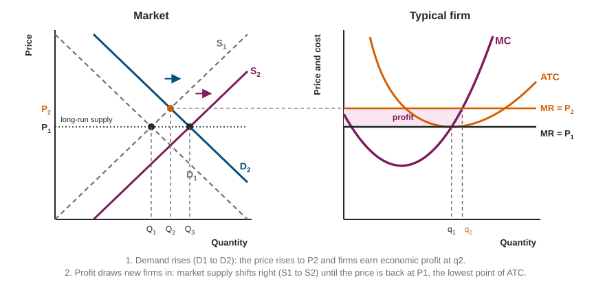

One wheat farmer harvests a record crop, yet the price of wheat does not budge: her crop is a speck in a huge market. She can sell all she grows at the going price and nothing above it. That is life in perfect competition, and it is why readers want the market graph and the firm graph side by side, every time.
What makes a market perfectly competitive
- Many buyers and many sellers, each too small to change the market price.
- Identical products: one firm's wheat is the same as another's.
- Known prices: buyers and sellers know the going price.
- Free entry and exit: nothing stops a firm from starting up or leaving in the long run.
Together these make each firm a price taker. If a farmer asked a cent more than the market price, buyers would go to her neighbors; she has no reason to ask less, since she can sell all she wants at the market price.
Market and firm, side by side

Draw it the way readers score it:
- Market on the left: Price and Quantity, a downward D and an upward S crossing at PM and QM (capital Q).
- Firm on the right: Price and cost and Quantity (lower-case q), a U-shaped MC rising through the lowest points of AVC and ATC.
- Carry the price across with a dashed line: the firm's demand is horizontal at PM. Label it d = MR = AR = P. A downward-sloping firm demand curve loses the point (about half of students miss it).
- Find q where MR = MC, on the rising part of MC.
- Compare P with ATC at q: above it, the profit rectangle; below it, the loss rectangle; equal, zero economic profit.
From the short run to the long run
Worked example: demand for wheat rises. The market starts in long-run equilibrium at $6 a bushel; a typical farm makes 2,000 bushels at the lowest point of ATC, $6.
- Short run. Market demand shifts right and the price rises to $8. The farm moves up its MC curve to 2,400 bushels, where ATC is $6.50.
- Profit.
dollars of economic profit, the rectangle from $8 down to $6.50, out to 2,400. - Entry. The profit draws new farms in. Market supply shifts right and the price falls.
- New long run. Entry stops when the price is back to the lowest point of ATC, $6. Each farm again makes 2,000 bushels and earns zero economic profit, but there are more farms, so the market sells more wheat than before.

Losses run the same chain in reverse: firms exit, market supply shifts left, the price rises to the lowest point of ATC. In every case the long-run answer is P = minimum ATC with zero economic profit.
Why economists like this outcome
In long-run equilibrium P = MR = MC = minimum ATC:
- Allocative efficiency: P = MC. The value buyers place on the last unit equals the cost of making it, so the market produces the quantity that maximizes total surplus, with no deadweight loss.
- Productive efficiency: each unit is made at the lowest possible average cost, the lowest point of ATC.
Constant-cost industries
In a constant-cost industry, firms' costs do not change when the industry grows, so entry brings the price back to exactly the same level. Join the long-run equilibrium points and the long-run industry supply curve is horizontal at minimum ATC. This is the model the exam uses.